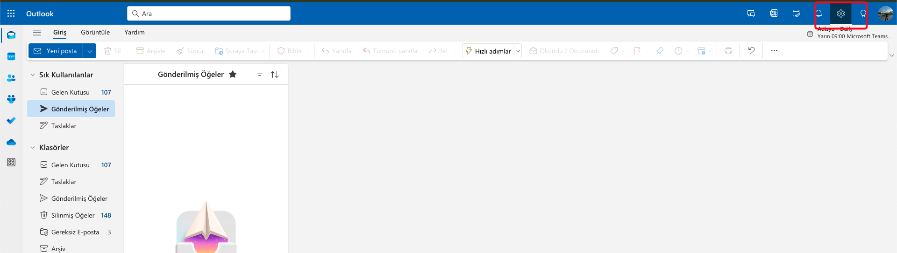
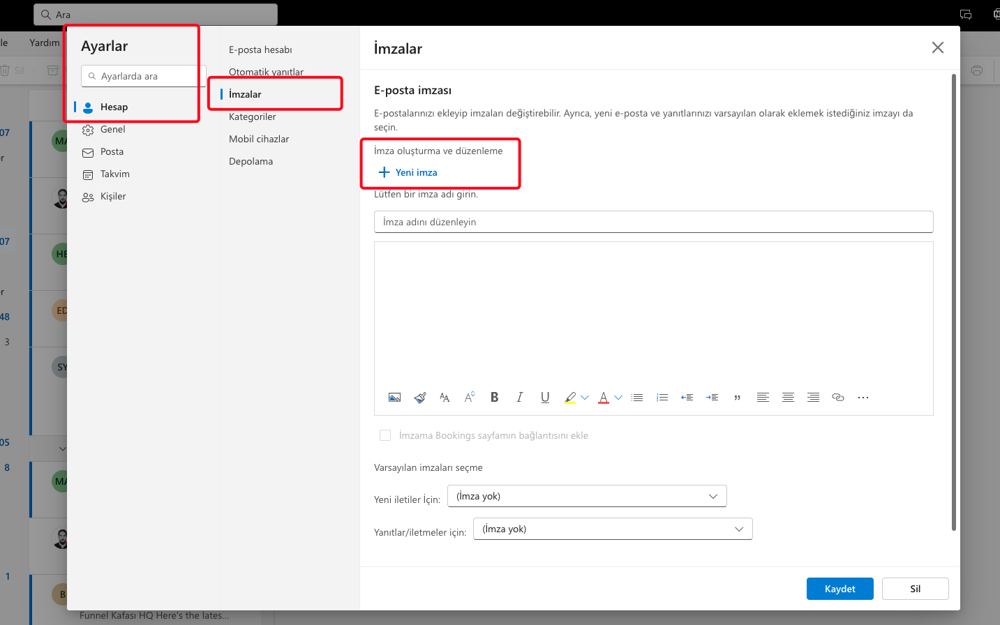
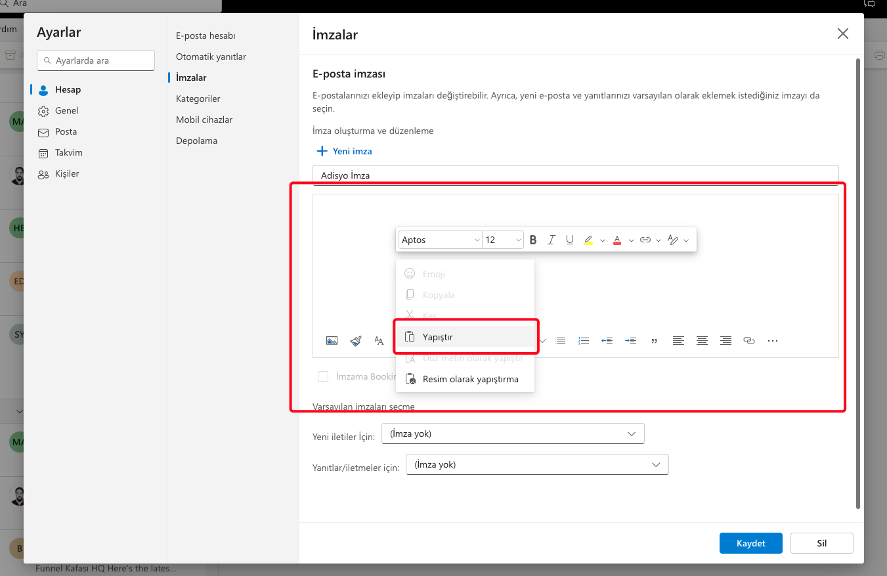
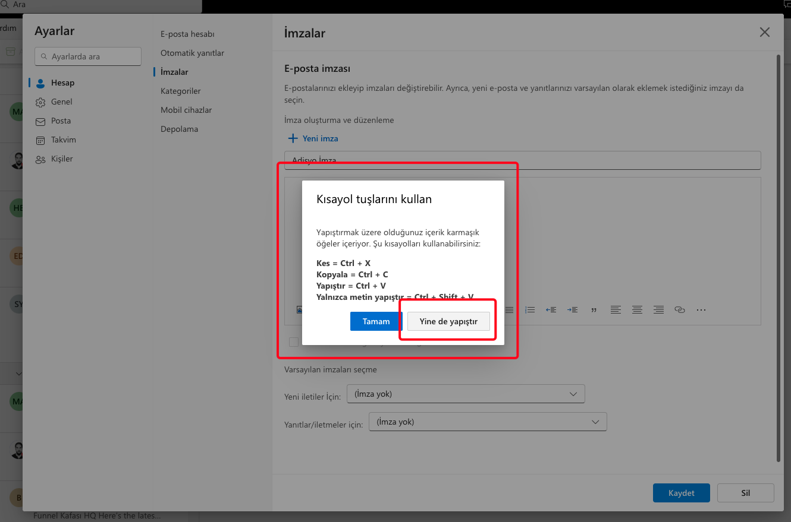
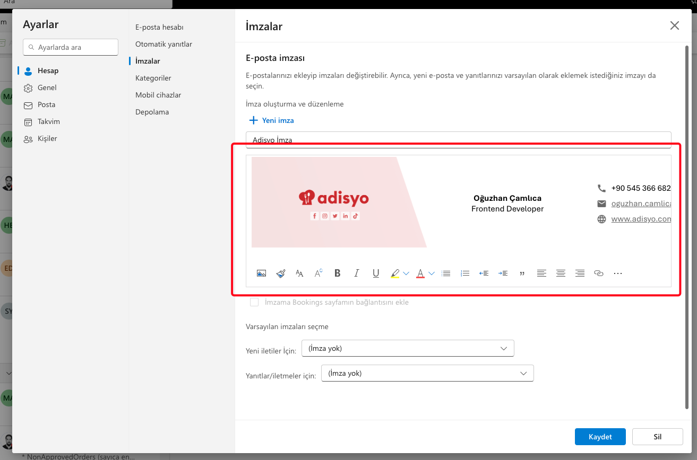
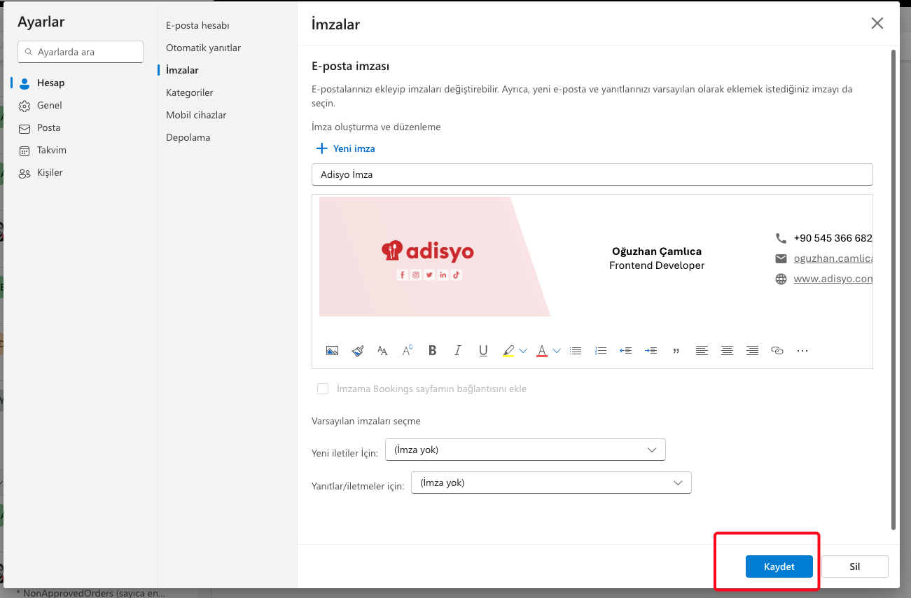
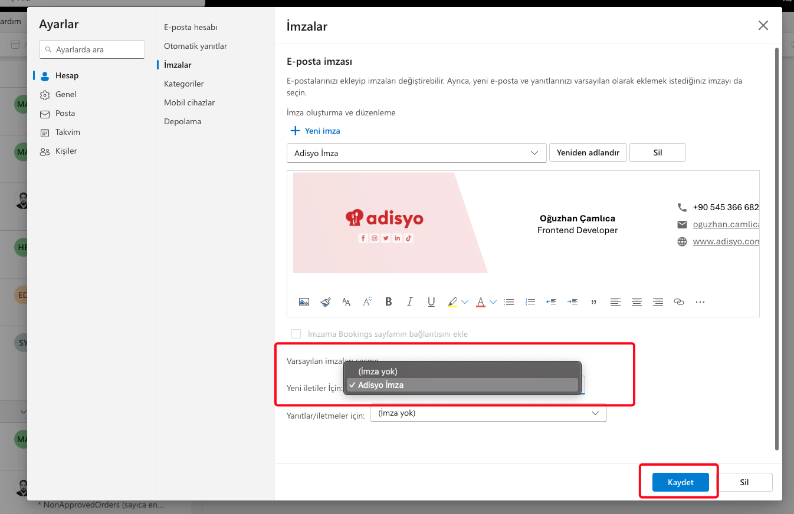

1. Adım: Outlook adresine giriş yapın
2. Adım: Outlook ayarlar ekranını açın
Sağ üst köşede bulunan resimdeki işaretli buton

3. Adım: Hesap>İmzalar sekmesini açın
Yeni imza butonuna tıklayın ve altında bulunan "İmza adını düzenleyin" alanına imzanızın ismini girin.
Örn: Adisyo İmza

4. Adım: İmza seçiminizi yapın
- Eğer imzanızda telefon numarası alanının görünmesini İSTİYORSANIZ alttaki "Kopyala" butonu ile imzayı
kopyalayın ve 5. adıma geçin.
Kopyalandı!
- Eğer imzanızda telefon numarası alanının görünmesini İSTEMİYORSANIZ alttaki "Kopyala" butonu ile imzayı
kopyalayın ve 5. adıma geçin.
Kopyalandı!
5. Adım: İmzanızı outlook mailinize ekleyin
Resimde seçili alana sağ tıklayın ve yapıştır seçeneği ile kopyaladığınız imzayı yapıştırın.

Not: Eğer aşağıdaki gibi bir uyarıyla karşılaşırsanız "Yine de yapıştır" seçeneğiyle devam edin.

İmzayı ekledikten sonra bu şekilde görünmesi gerekiyor. Eğer sorun yaşarsanız uygulama adımlarını
yeniden kontrol edin.

6. Adım: İmzayı kaydedin
Kaydet butonu ile imzanızı kaydedin ve 7. adıma geçin

7. Adım: İmza ayarlarını tamamlayın
Resimdeki; "Yeni iletiler için" seçeneğinden isim verdiğiniz ("Adisyo İmza") imzanızı seçip "Kaydet"
butonu ile kaydedin ve ekranı kapatın.

İşte bu kadar! İmzanız başarıyla oluşturulmuştur. Kendi adresinize test maili göndererek deneyebilirsiniz.